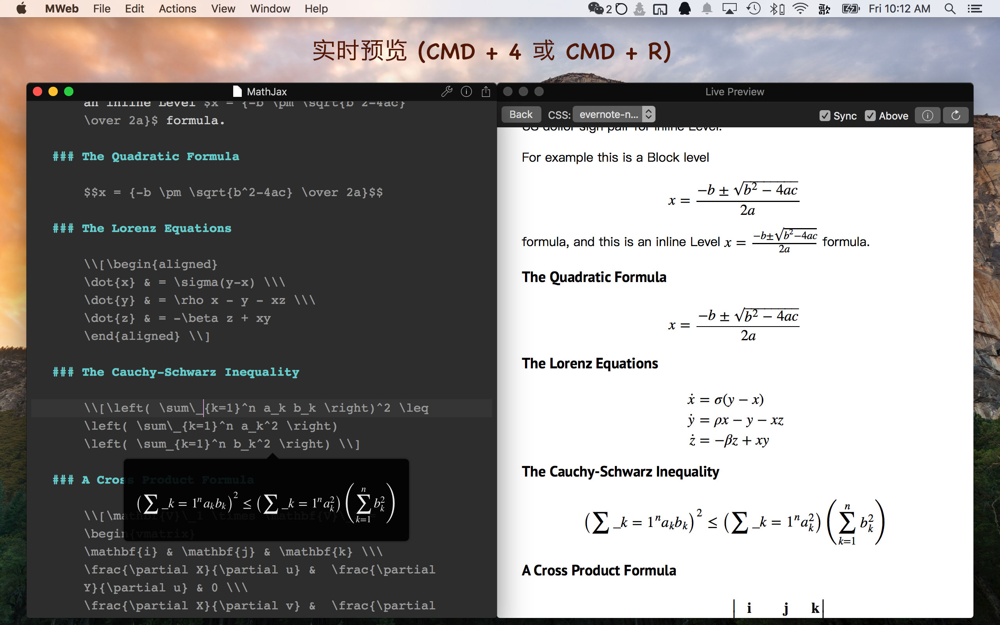

MWeb 1.8 发布！LaTex 语法高亮和编辑器内预览、EL Capitan 优化、Bug 修正等

- 增加记忆文档滚动位置的功能，之前在切换文档时，会总是跳到顶部，现在会记住你之前滚动的位置，下次切换时会还原（Pro Only）。
- 增加 LaTex 语法高亮和编辑器内实时预览。之前写 LaTex 想要预览的话，要打开预览窗口，而且不大好用，现在可以在编辑器内实时预览，已经非常好用了（Pro Only）。
- 实时预览窗口工具栏上增加 Above 的选项，选中后会一直在编辑器上面。这个选项给切换文档时喜欢先看预览效果的朋友。
- 增加支持 EL Capitan 的 Split View 模式，现在可以在 Split View 的左边放编辑器，右边放实时预览窗口了。
- 如果取消
Resize window when hide pane选项的话，在全屏模式下也支持 CMD + 1， CMD + 3 切换显示面板了。 - 修正文档库分类拖动和排序问题
- 修正文档列表拖动排序闪退问题
- 修正打开某些文档 CPU 会 100%， 文档库文档点开后要选择才看到字体问题。
- 修正文档库中文档列表输入标题前不能同步显示，直到写入内容才会同步显示的问题
- 修正文档库新增分类直接 Build Site 闪退问题。
- 修正 CMD + F 打开查找面板后，不能用 CMD + Option + F 切换为替换面板的问题。
- 修正一些文档导出为 PDF 闪退问题。